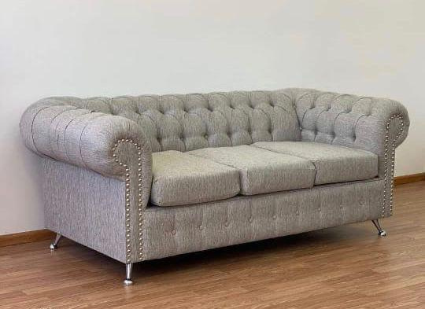

Nosotros
Una segunda generacion que convierte oficio en marca
TAPISUR nace desde una historia familiar profunda en el rubro. Retoma esa experiencia y la proyecta en una marca actual, cercana y con ambicion de crecimiento.
Historia familiar real
Trabajo artesanal
Marca en crecimiento

Historia familiar
Zona sur
La Americana
Segunda generacion
Marca propia
Fabricacion, ventas y posventa
Historia familiar
Zona sur
La Americana
Segunda generacion
Marca propia
Fabricacion, ventas y posventa
Trayectoria
Historia familiar y etapa actual
Mas de 70 anos de historia en el rubro
La familia comenzo hace decadas en tapiceria y mobiliario con La Americana, en zona sur, construyendo experiencia, oficio y reconocimiento.
TAPISUR como nueva etapa
TAPISUR representa la segunda generacion del proyecto, con una identidad propia orientada al trabajo artesanal, la personalizacion y la atencion directa.
Marca en crecimiento
Hoy la empresa hace fabricacion, ventas, logistica y posventa, con el objetivo de consolidarse y hacerse conocida por calidad, cumplimiento y cercania.
De la experiencia heredada a una marca con voz propia
La historia familiar le da sustento al proyecto. La marca actual le da direccion, presencia y una forma mas clara de mostrarse frente a clientes, locales y alianzas.
de oficio familiar en el rubro de tapiceria y mobiliario.
para crecer con identidad visual, comercial y de servicio.
Una historia que sigue creciendo
TAPISUR forma parte de una trayectoria familiar en el rubro. La marca actual no reemplaza esa historia: la continua con una propuesta mas contemporanea, cercana y enfocada en crecer.
- Experiencia heredada del trabajo familiar en zona sur.
- Una nueva etapa con voz propia, imagen propia y objetivos propios.
- Compromiso con calidad, cumplimiento y trato humano.
Marca en construccion
Queremos que TAPISUR se haga conocida por una combinacion clara de oficio, diseno y atencion directa.
La propuesta no termina en la fabricacion: acompanamos al cliente desde la idea hasta la entrega y el seguimiento posterior.
TAPISUR - Historia, oficio y crecimientoUna marca que quiere hacerse conocida
Estamos construyendo una presencia mas solida y actual para que la calidad del trabajo tambien se vea en la imagen de la marca.